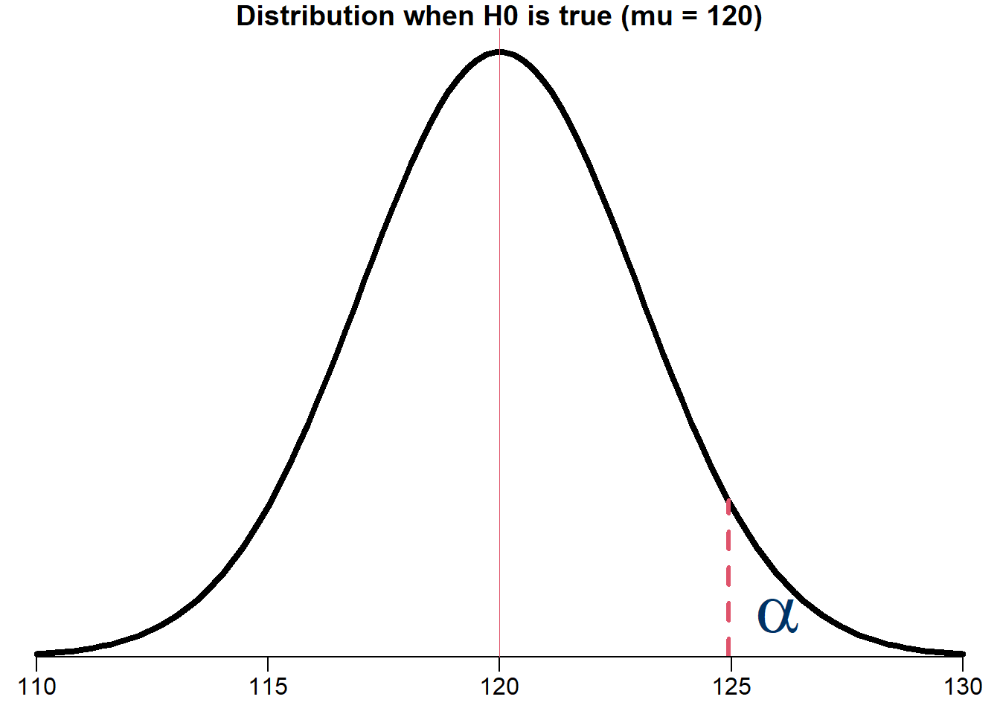
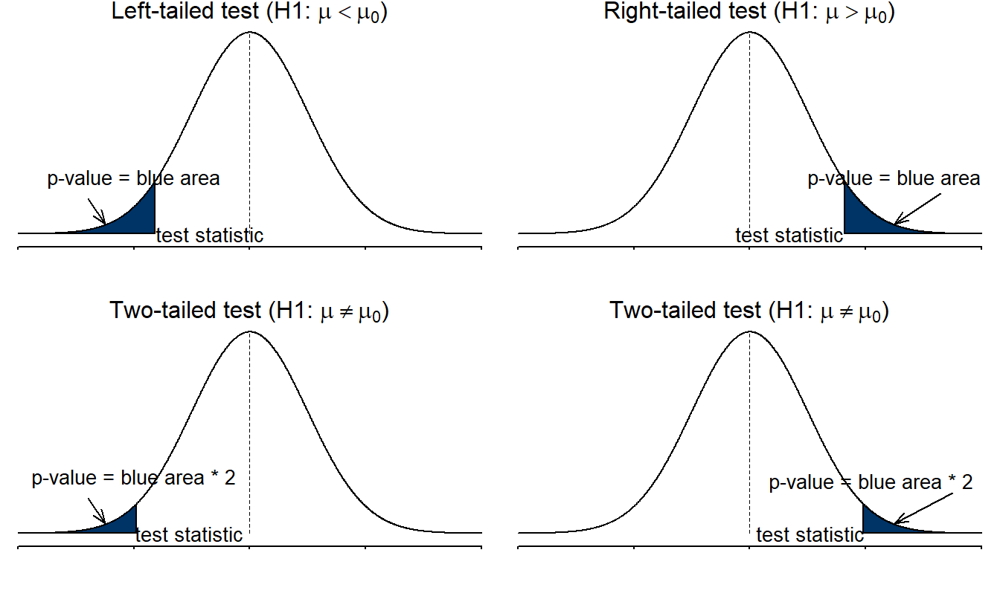
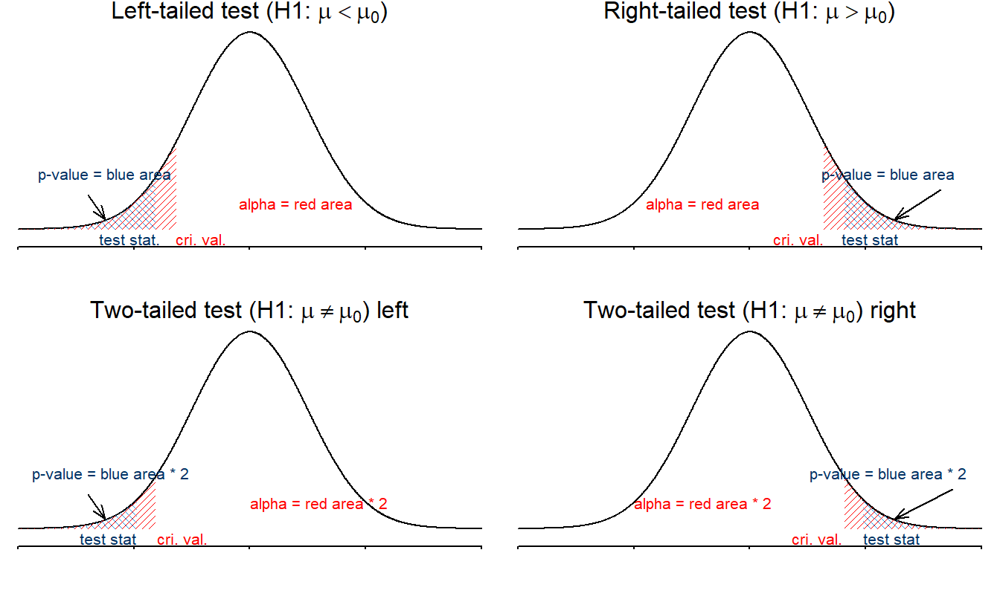
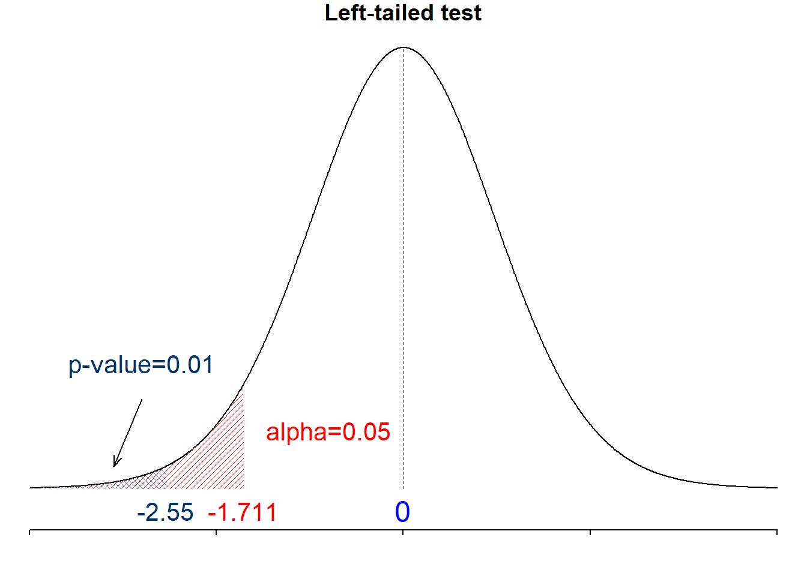
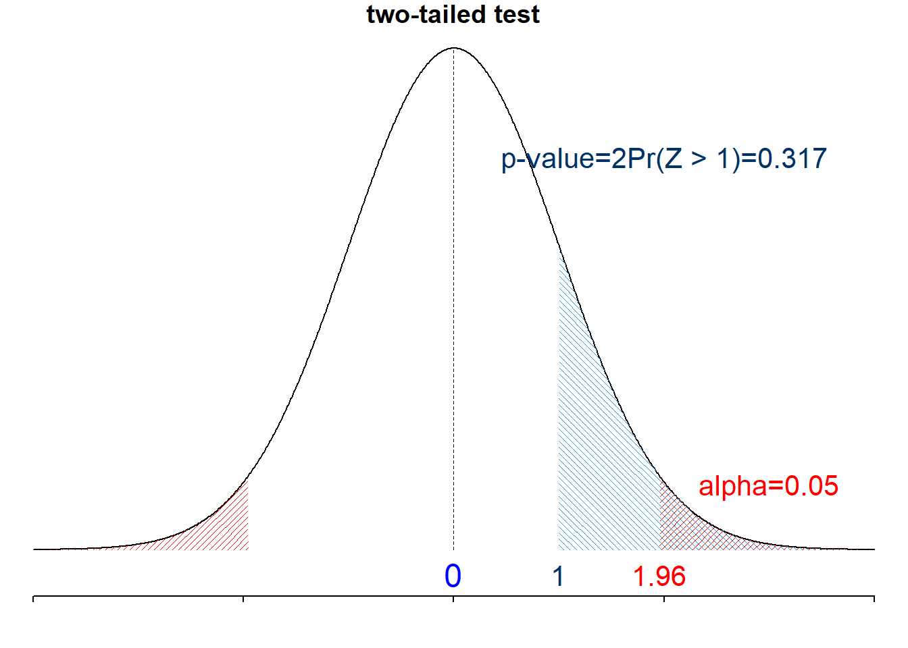

15 Hypothesis Testing
This book serves as a main reference book for my MATH 4720 Statistical Methods and MATH 4740 Biostatistical Methods at Marquette University. Some topics can also be discussed in an introductory data science course. You’ll learn basic probability and statistical concepts as well as data analysis techniques such as linear regression using R computing software.
15.1 What is a Hypothesis Testing?
- A hypothesis is a claim or statement about a property of a population, often the value of a population parameter.
- The mean body temperature of humans is less than \(98.6^{\circ}\) F, or \(\mu < 98.6\).
- Marquette students’ IQ scores has standard deviation equal to 15, or \(\sigma = 15\).
- Null hypothesis \((H_0)\): a statement that the value of a parameter is
- equal to some claim value
- the negation of the alternative hypothesis
- often represents a skeptical perspective to be tested
- Alternative hypothesis \((H_1\) or \(H_a)\): a claim that the parameter is less than, greater than or not equal to some value.
- usually our research hypothesis of some new scientific theory or finding
15.2 Null and Alternative Hypothesis
The percentage of Marquette female students loving Japanese food is equal to 80%.
On average, Marquette students consume less than 3 drinks per week.
Hypothesis testing 1 is a procedure to decide whether to reject \(H_0\) or not by how much evidence against \(H_0\).
[1] Null Hypothesis Statistical Testing (NHST), statistical testing or test of significance.
15.3 Hypothesis Testing Example
- A person is charged with a crime.
- A jury decide whether the person is guilty or not.
- The accuse is assumed to be innocent until the jury declares otherwise.
- Only if overwhelming evidence of the person’s guilt can be shown is the jury expected to declare the person guilty, otherwise the person is considered not guilty.

- \(H_0:\) The person is not guilty 🙂
- \(H_1:\) The person is guilty 😟
- Evidence: Photos, videos, witness, fingerprint, DNA
- Decision Rule: Jury’s voting
- Conclusion: Verdict “guilty” or “NOT enough evidence to convict”
15.4 How to Formally Do a Statistical Hypothesis Testing
Step 0: Check Method Assumptions
Step 1: Set the \(H_0\) and \(H_a\) in Symbolic Form from a Claim
Step 2: Set the Significance Level \(\alpha\)
Step 3: Calculate the Test Statistic (Evidence)
Decision Rule I: Critical Value Method
Decision Rule II: P-Value Method
Step 4-c: Find the Critical Value
Step 4-p: Find the P-Value
Step 5-c: Draw a Conclusion Using Critical Value Method
Step 5-p: Draw a Conclusion Using P-Value Method
Step 6: Restate the Conclusion in Nontechnical Terms, and Address the Original Claim
- 😎 No worries, we will learn this step by step!
15.5 The New Treatment is Effective?
- A population of hypertension group is normal and has mean blood pressure (BP) 150.
- After 6 months of treatment, BP was recorded on 25 patients of this population, and \(\overline{x} = 147.2\) and \(s = 5.5\).
- Goal: Determine whether a new treatment is effective in reducing BP.

15.6 Step 0: Check Method Assumptions
The testing methods are based on normality or approximate normality by CLT.
- Random sample
- Normally distributed and/or \(n > 30\)

15.7 Step 1: Set the \(H_0\) and \(H_1\) from a Claim
- 🧑🏫 The mean IQ score of statistics professors is higher than 120.
- \(\begin{align}&H_0: \mu \le 120 \\ &H_1: \mu > 120 \end{align}\)
- 💵 The mean starting salary for Marquette graduates who didn’t take MATH 4720 is less than $60,000.
- \(\begin{align} &H_0: \mu \ge 60000 \\ &H_1: \mu < 60000 \end{align}\)
- 📺 The mean time between uses of a TV remote control by males during commercials equals 5 sec.
- \(\begin{align} &H_0: \mu = 5 \\ &H_1: \mu \ne 5 \end{align}\)
- The claim that the new treatment is effective in reducing BP means the mean BP is less than 150. ( \(H_1\) claim )
- \(\small \begin{align} &H_0: \mu = 150 \\ &H_1: \mu < 150 \end{align}\)
15.8 Step 2: Set the Significance Level \(\alpha\)
The significant level \(\alpha\) determines how rare or unlikely our evidence must be in order to represent sufficient evidence against \(H_0\).
An \(\alpha\) level of 0.05 implies that evidence occurring with probability lower than 5% will be considered sufficient evidence against \(H_0\) (Reject \(H_0\)).
\(\alpha = P(\text{Reject } H_0 \mid H_0 \text{ is true})\)
\(\alpha = 0.05\) means that we incorrectly reject \(H_0\) 5 out of every 100 times we collect a sample and run the test.

- Let’s set \(\alpha= 0.05\).
- This means we are asking, “Is there a sufficient evidence at \(\alpha= 0.05\) that the new treatment is effective?”
15.9 Step 3: Calculate the Test Statistic
- A test statistic is a statistic value used in making a decision about the \(H_0\).
Suppose \(H_0: \mu = \mu_0 \quad H_1: \mu < \mu_0\)
When computing a test statistic, we assume \(H_0\) is true.
When \(\sigma\) is known, the test statistic for testings about \(\mu\) is
\[\boxed{ z_{test} = \frac{\overline{x} - \color{blue}{\mu_0}}{\sigma/\sqrt{n}} }\]
- When \(\sigma\) is unknown, the test statistic for testings about \(\mu\) is
\[\boxed{ t_{test} = \frac{\overline{x} - \color{blue}{\mu_0}}{s/\sqrt{n}} }\]
- The test statistic is \(\small t_{test} = \frac{\overline{x} - \mu_0}{s/\sqrt{n}} = \frac{147.2 - 150}{5.5/\sqrt{25}} = -2.55\)
15.10 Step 4-c: Find the Critical Value
- The critical value(s) separates the rejection region or critical region (where we reject \(H_0\)) from the values of the test statistic that do not lead to rejection of \(H_0\).
- They depend on whether the test is a right-tailed, left-tailed or two-tailed test.

👉 \(z_{\alpha}\) is such that \(P(Z > z_{\alpha}) = \alpha\) and \(Z \sim N(0, 1)\).
👉 \(t_{\alpha, n-1}\) is such that \(P(T > t_{\alpha, n-1}) = \alpha\) and \(T \sim t_{n-1}\).
| Condition | Right-tailed \((H_1: \mu > \mu_0)\) | Left-tailed \((H_1: \mu < \mu_0)\) | Two-tailed \((H_1: \mu \ne \mu_0)\) |
|---|---|---|---|
| \(\sigma\) known | \(z_{\alpha}\) | \(-z_{\alpha}\) | \(-z_{\alpha/2}\) and \(z_{\alpha/2}\) |
| \(\sigma\) unknown | \(t_{\alpha, n-1}\) | \(-t_{\alpha, n-1}\) | \(-t_{\alpha/2, n-1}\) and \(t_{\alpha/2, n-1}\) |
- \(z_{0.025} =\) 1.96, \(z_{0.05} =\) 1.64
- \(z_{\alpha}\) and \(t_{\alpha, n-1}\) are always positive.
- The critical value is \(\small -t_{0.05, 25-1} = -t_{0.05, 24} = -1.711\)
15.11 Step 5-c: Draw a Conclusion Using Critical Value
- If the test statistic is
- in the rejection region, we reject \(H_0\).
- not in the rejection region, we do not or fail to reject \(H_0\).
- Reject \(H_0\) if
| Condition | Right-tailed \((H_1: \mu > \mu_0)\) | Left-tailed \((H_1: \mu < \mu_0)\) | Two-tailed \((H_1: \mu \ne \mu_0)\) |
|---|---|---|---|
| \(\sigma\) known | \(z_{test} > z_{\alpha}\) | \(z_{test} < -z_{\alpha}\) | \(\mid z_{test}\mid \, > z_{\alpha/2}\) |
| \(\sigma\) unknown | \(t_{test} > t_{\alpha, n-1}\) | \(t_{test} < -t_{\alpha, n-1}\) | \(\mid t_{test}\mid \, > t_{\alpha/2, n-1}\) |

- \(\small t_{test} = \frac{\overline{x} - \mu_0}{s/\sqrt{n}} = \frac{147.2 - 150}{5.5/\sqrt{25}} = -2.55\)
- \(\small -t_{0.05, 25-1} = -t_{0.05, 24} = -1.711\)
- We reject \(H_0\) if \(t_{test} < -t_{\alpha, n-1}\). Since \(\small t_{test} = -2.55 < -1.711 = -t_{\alpha, n-1}\), we reject \(H_0\).
15.12 Step 4-p: Find the P-Value
- The \(p\)-value measures the strength of the evidence against \(H_0\) provided by the data.
- The smaller the \(p\)-value, the greater the evidence against \(H_0\).
- The \(p\)-value is the probability of getting a test statistic value that is at least as extreme as the one obtained from the data, assuming that \(H_0\) is true. \((\mu = \mu_0)\)
- For example, \(p\)-value \(= P(Z \ge z_{test} \mid H_0)\) for a right-tailed test.
15.13 P-Value Illustration

- This is a left-tailed test, so the \(p\)-value is \(P(T < t_{test})=P(T < -2.55) =\) 0.01
15.14 Step 5-p: Draw a Conclusion Using P-Value Method
- If the \(p\)-value \(\le \alpha\) , we reject \(H_0\).
- If the \(p\)-value \(> \alpha\), we do not reject or fail to reject \(H_0\).
| Condition | Right-tailed \((H_1: \mu > \mu_0)\) | Left-tailed \((H_1: \mu < \mu_0)\) | Two-tailed \((H_1: \mu \ne \mu_0)\) |
|---|---|---|---|
| \(\sigma\) known | \(P(Z > z_{test} \mid H_0)\) | \(P(Z < z_{test} \mid H_0)\) | \(2P(Z > \,\mid z_{test} \mid \, \mid H_0)\) |
| \(\sigma\) unknown | \(P(T > t_{test} \mid H_0)\) | \(P(T < t_{test} \mid H_0)\) | \(2P(T > \, \mid t_{test} \mid \, \mid H_0)\) |
- We reject \(H_0\) if \(p\)-value < \(\alpha\). Since \(p\)-value \(= 0.01 < 0.05 = \alpha\), we reject \(H_0\).
15.15 Both Methods Lead to the Same Conclusion


15.16 Step 6: Restate the Conclusion in Nontechnical Terms, and Address the Original Claim


- There is sufficient evidence to support the claim that the new treatment is effective.
15.17 Example Calculation in R
## create objects for any information we have
alpha <- 0.05; mu_0 <- 150;
x_bar <- 147.2; s <- 5.5; n <- 25
## Test statistic
(t_test <- (x_bar - mu_0) / (s / sqrt(n))) [1] -2.545455## Critical value
(t_cri <- qt(alpha, df = n - 1, lower.tail = TRUE)) [1] -1.710882## p-value
(p_val <- pt(t_test, df = n - 1, lower.tail = TRUE)) [1] 0.00887815815.18 Example 2: Two-tailed z-test
- The milk price of a gallon of 2% milk is normally distributed with standard deviation of $0.10.
- Last week the mean milk price was 2.78. This week, based on a sample of size 25, the sample mean milk price \(\overline{x} = 2.80\).
- Under \(\alpha = 0.05\), determine if this week the mean price is different.

- Step 1: This is a \(H_1\) claim \(\small \begin{align}&H_0: \mu = 2.78 \\ &H_1: \mu \ne 2.78 \end{align}\)
- Step 2: \(\small \alpha = 0.05\)
- Step 3: \(\small z_{test} = \frac{\overline{x} - \mu_0}{\sigma/\sqrt{n}} = \frac{2.8 - 2.78}{0.1/\sqrt{25}} = 1.00\)
- Step 4-c: \(\small z_{0.05/2} = 1.96\).
- Step 5-c: This is a two-tailed test and we reject \(H_0\) if \(|z_{test}| > z_{\alpha/2}\). Since \(\small |z_{test}| = 1 < 1.96 = z_{\alpha/2}\), we DO NOT reject \(H_0\).
- Step 4-p: This is a two-tailed test, and the test statistic is on the right \((> 0)\), so the \(p\)-value is \(2P(Z > z_{test})=\) 0.317
- Step 5-p: We reject \(H_0\) if \(p\)-value < \(\alpha\). Since \(p\)-value \(= 0.317 > 0.05 = \alpha\), we DO NOT reject \(H_0\).
- Step 6: There is insufficient evidence to support the claim that this week the mean milk price is different from the price last week.

15.19 Example 2 Calculation in R
## create objects to be used
alpha <- 0.05; mu_0 <- 2.78;
x_bar <- 2.8; sigma <- 0.1; n <- 25
## Test statistic
(z_test <- (x_bar - mu_0) / (sigma / sqrt(n))) [1] 1## Critical value
(z_crit <- qnorm(alpha/2, lower.tail = FALSE)) [1] 1.959964## p-value
(p_val <- 2 * pnorm(z_test, lower.tail = FALSE)) [1] 0.317310515.20 Testing Summary
| Numerical Data, \(\sigma\) known | Numerical Data, \(\sigma\) unknown | |
|---|---|---|
| Parameter of Interest | Population Mean \(\mu\) | Population Mean \(\mu\) |
| Test Type | One sample \(\color{blue}{z}\) test \(H_0: \mu = \mu_0\) | One sample \(\color{blue}{t}\) test \(H_0: \mu = \mu_0\) |
| Confidence Interval | \(\bar{x} \pm z_{\alpha/2} \frac{\sigma}{\sqrt{n}}\) | \(\bar{x} \pm t_{\alpha/2, n-1} \frac{\color{blue}{s}}{\sqrt{n}}\) |
| Test Stat under \(H_0\) | \(z_{test} = \frac{\overline{x} - \mu_0}{\frac{\sigma}{\sqrt{n}}}\) | \(t_{test} = \frac{\overline{x} - \mu_0}{\frac{\color{blue}{s}}{\sqrt{n}}}\) |
| ** \(p\)-value under \(H_0\) ** | \(H_1: \mu < \mu_0\) \(p\)-value \(=P(Z \le z_{test})\) |
\(H_1: \mu < \mu_0\) \(p\)-value \(=P(T_{n-1} \le t_{test})\) |
| \(H_1: \mu > \mu_0\) \(p\)-value \(=P(Z \ge z_{test})\) |
\(H_1: \mu < \mu_0\) \(p\)-value \(=P(T_{n-1} \ge t_{test})\) |
|
| \(H_1: \mu \ne \mu_0\) \(p\)-value \(=2P(Z \ge \, \mid z_{test}\mid)\) |
\(H_1: \mu \ne \mu_0\) \(p\)-value \(=2P(T_{n-1} \ge \, \mid t_{test} \mid)\) |
15.21 Type I and Type II Errors
| Decision | \(H_0\) is true | \(H_0\) is false |
|---|---|---|
| Reject \(H_0\) | Type I error | Correct decision |
| Do not reject \(H_0\) | Correct decision | Type II error |
- Back to the crime example: \(H_0:\) The person is not guilty v.s. \(H_1:\) The person is guilty
| Decision | Truth is the person innocent | Truth is the person guilty |
|---|---|---|
| Jury decides the person guilty | Type I error | Correct decision |
| Jury decides the person innocent | Correct decision | Type II error |
- \(\alpha = P(\text{type I error}) = P(\text{rejecting } H_0 \text{ when } H_0 \text{ is true})\)
- \(\beta = P(\text{type II error}) = P(\text{failing to reject } H_0 \text{ when } H_0 \text{ is false})\)